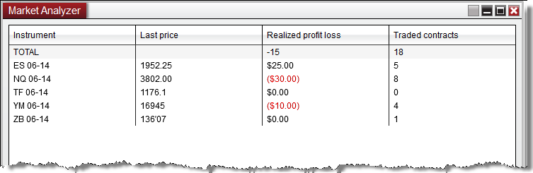

|
<< Click to Display Table of Contents >> Working with Instrument Rows |


|
Working with Instrument Rows
|
<< Click to Display Table of Contents >> Working with Instrument Rows |
|
The Market Analyzer window allows you to display a variety of real-time quotes, indicator values, and position information on multiple instruments. You can add, remove, and organize individual instrument rows, Instrument Lists, Label rows, Blank rows, and a Total row with the instructions listed below.
Adding an InstrumentYou can add an individual instrument to the Market Analyzer through one of the techniques below:
•Press down on your right mouse button in the Market Analyzer window and select the menu item Add Instrument(s). Through the Instrument Selector menu, you can navigate through various instrument lists to locate the instrument you desire, and left click on the instrument to add the individual instrument to the Market Analyzer.
•With the Market Analyzer window selected begin typing the instrument symbol directly on the keyboard. Typing will trigger the Overlay Instrument Selector.
•Double left mouse click in a Blank row under the Instrument column to get a flashing text cursor. After the cursor is showing in the row you can type in the symbol of your choice and press enter to add the instrument.
Editing an Instrument RowTo change an instrument, double click on an existing Instrument cell which will give you a flashing text cursor, allowing you to edit the instrument to a new instrument of your choice.
Adding an Instrument ListYou can rapidly add a list of instruments to the Market Analyzer window.
•Press down on your right mouse button in the Market Analyzer window and select Add Instrument(s) > and then select the desired "Instrument List" and then Select All. Please see the Instrument Lists section of the user help guide for additional information on creating, editing, and deleting Instrument lists.
|
 How to Create an Instrument List from the Market Analyzer
How to Create an Instrument List from the Market Analyzer
Creating an Instrument ListIf you have a Market Analyzer setup with a number of different instruments you would like to save for later, you can quickly add the entire display of instruments into an Instrument List for quick access.
•Press down on your right mouse button in the Market Analyzer window and select the menu Create Instrument List , then give the Instrument List a unique name and press OK.
You will now be able to access this list from other features of NinjaTrader using the Instrument Selector. You can further edit this list by using the Instrument Lists window
|
Label rows are user defined and can be used to separate groups of instruments in any way (by asset class, instrument list, etc.).Adding Label Rows in the Market Analyzer WindowPress down on your right mouse button inside the Market Analyzer window and select the menu Add Label Row. Once the Label row is added you can type in any user defined name.
Editing the Label Row NameIf you have an existing Label row you wish to go back and change the text, double clicking on the exiting Label row text will give you a flashing cursor, allowing you to type in a new name for the Label row.
Dynamic Sorting within Label RowsInstruments you drag or add under a Label row will "auto-sort" with only the other instruments under the same Label row. For example, if you have one Label row for futures and one for stocks, when you sort the columns, the instruments listed under the futures label would be sorted only against other instruments under the futures label, while instruments under the stocks label would be sorted only against instruments under the stocks label. For more information on ranking and sorting within the Market Analyzer see the Dynamic Ranking and Sorting section of the user help guide.
Aligning a Label Row The label of a Label Row can be aligned to the left, center or right of the row. This is done by right mouse clicking within the Market Analyzer and selecting the Properties menu. Change the property Label row text alignment to either "Left", "Center", or "Right". |
Adding Blank rows to the Market Analyzer windowBlank rows can be used to create space between instruments in the Market Analyzer window or if you need to add more instruments. To add a Blank row press down on your right mouse button in the Market Analyzer window and select the menu Add Blank Row. The Blank row will be added above the row you right clicked in.
|
 How to move Instrument, Label and Blank rows
How to move Instrument, Label and Blank rows
Moving Rows in the Market Analyzer WindowInstrument, Label and Blank rows can all be moved up or down within the Market Analyzer window. To move a row in the Market Analyzer window press down and hold on your left mouse button in the row you would like to move and drag it to the new location. When your cursor is hovering over the new desired location release your left mouse button to set the row down in the new location. |
 How to remove Instrument, Label and Blank rows
How to remove Instrument, Label and Blank rows
Removing Instrument, Label and Blank RowsTo remove an Instrument, Label or Blank row left mouse click on the row to select it and then press the delete button on your keyboard, or press down on your right mouse button within the row you want to remove and select the menu Remove Row.
|
 How to add and remove a Total row
How to add and remove a Total row
A Total row can total any column of values and is displayed at the top of the Market Analyzer window. For example, you could choose to display your total Realized PnL and total Traded Contracts for all instruments displayed in the Market Analyzer.
 Adding the Total row to the Market Analyzer windowTo add a Total row in the Market Analyzer you must enable both the Total row and the columns you would like totalled with the following steps: 1.Press down on your right mouse button in the Market Analyzer window and select the menu Properties. 2.In the Properties menu scroll down to the 3.Press the Apply button to apply the changes or press the OK button to apply the changes and exit the Properties menu. 4.To show each column’s total in the Total row press down on your right mouse button inside the Market Analyzer window and select the menu Columns. 5.Check the Show in Total row property each column you want totaled in the Total row.
6.Press the Apply button to apply the changes or press the OK button to apply the changes and exit the Columns window.
Removing the Total row from the Market Analyzer windowTo remove the Total row press down on your right mouse button inside the Market Analyzer window and select the menu Properties. Scroll down to the Total Row section and uncheck the property. Then press the Apply button to apply the changes or press the OK button to apply the changes and exit the Properties window. |
Row Filtering allows you to filter out (hide) rows from the Market Analyzer grid display based on a cell's value. Filter conditions can be setup for any column applied to the Market Analyzer.
To enable Row Filtering: 1.Press down on your right mouse button in the Market Analyzer window and select the menu Row Filter. 2.To access the Columns menu where you can add filtering conditions to each column press down on your right mouse button and select the menu Columns.
For more information on Row Filtering see the Creating Filter Conditions section of the user help guide. |